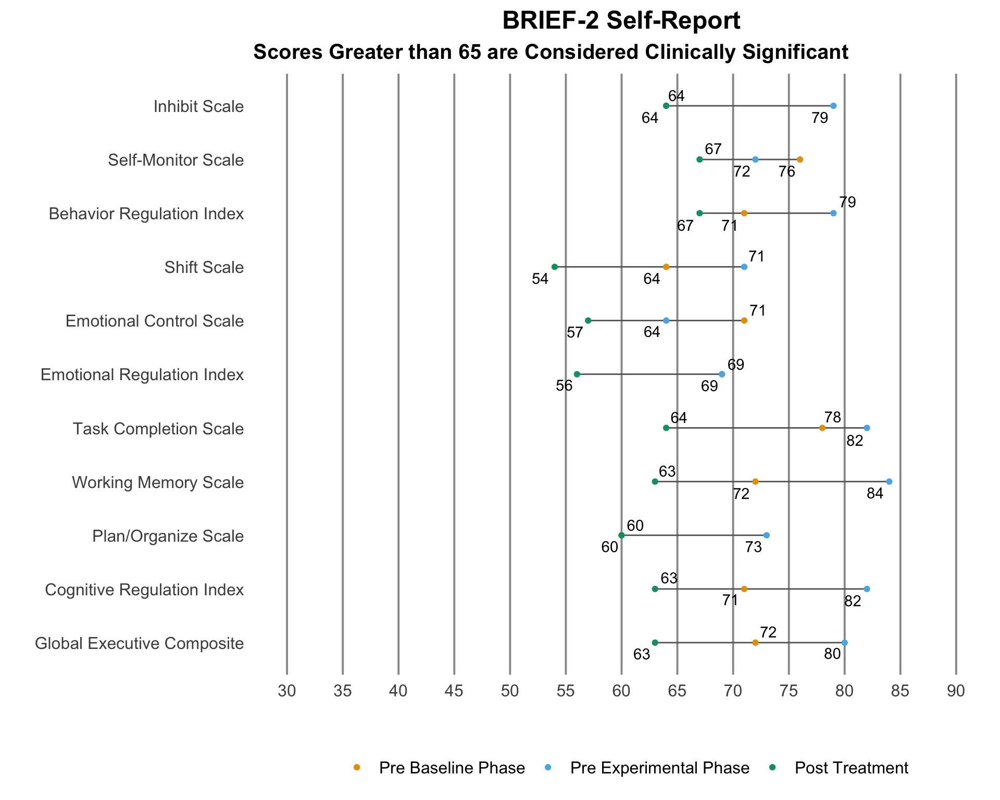
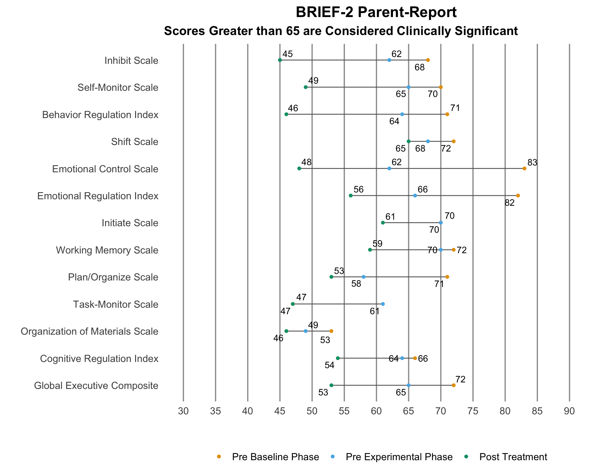
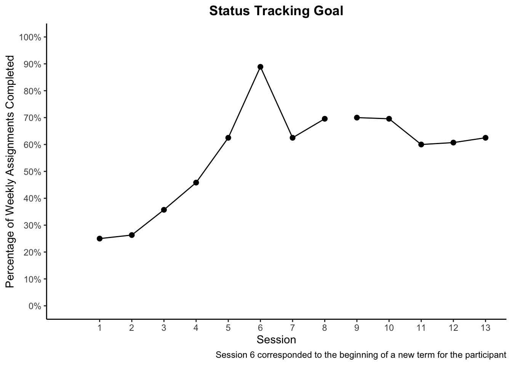
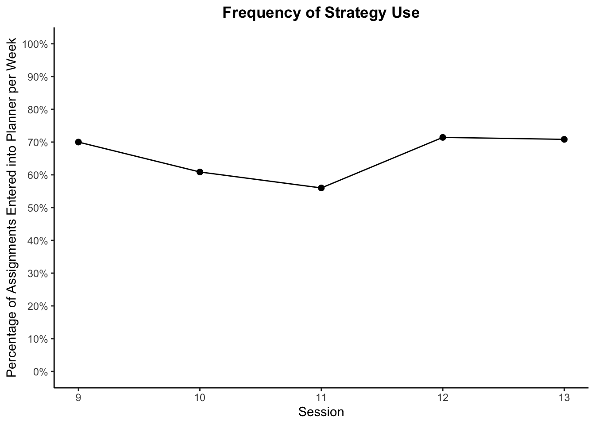
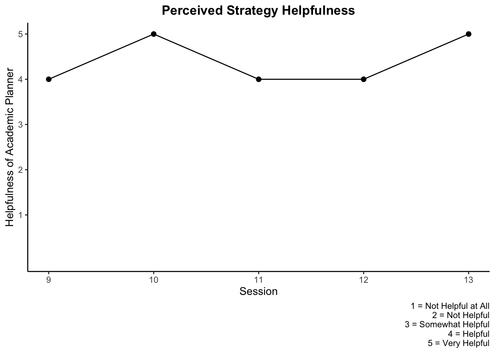

Participant 3
Demographic Information
| Participant Demographics | |||
|---|---|---|---|
| Sex | Age | Prior Concussions | History of Depression or Anxiety |
| Female | 13 | 3 | Yes |
Outcome Measurements
GAS Hierarchy - Increase weekly assignment completion
BRIEF-2
Self-report responses that guided treatment at time of pre-baseline data collection:
- Task Completion Scale
- Plan/Organize Scale
- Cognitive Regulation Index
Elevated scores from the parent-report pre-baseline included:
- Inhibit Scale
- Self-Monitor Scale
- Behavior Regulation Index
- Shift Scale
- Emotional Control Scale
- Emotional Regulation Index
- Initiate Scale
- Working Memory Scale
- Plan/Organize Scale
- Cognitive Regulation Index
- Global Executive Composite
BRIEF-2 Self-Report Plot

BRIEF-2 Self-Report Table Version 1
BRIEF-2 Self-Report Table Version 2
BRIEF-2 Parent-Report Plot

BRIEF-2 Parent-Report Table Version 1
BRIEF-2 Parent-Report Table Version 2
CLASS
Self-report responses that guided treatment at time of pre-baseline data collection:
- Easily distracted during homework
- Homework taking longer
Parent-report responses that guided treatment at time of pre-baseline data collection:
- Homework taking longer
CLASS Self 1
CLASS Self 2
CLASS Self Table
CLASS Parent 1
CLASS parent 2
CLASS Parent Table
PCSS
Pre-baseline symptom severity levels that guided treatment selection:
- Feeling “slow”
- Feeling “foggy”
- Difficulty concentrating
- Difficulty remembering
- Cognitive symptom cluster
All Scores
Symptom Scores
Total and Cluster Scores
Repeated Measurements
Status Tracking
Measurement

Assignment Count
Assignment Count 2
Assignment Count Table
Repeated Strategy Measurements
Cognitive Strategy: Use of academic planner to track weekly assignments.
Frequency of Strategy Use (Plot 1)

Frequency of Strategy Use (Plot 2)
Perceived Strategy Helpfulness

Treatment Implementation Measurements
TARF
The TARF is used to measure social validity.
Treatment Compliance
Participant 3 did not cancel or reschedule any sessions. There was a 3-week break between sessions 12 and 13 due to the winter holiday break.